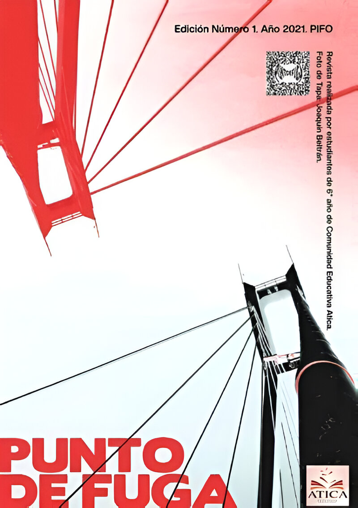

Punto de Fuga
Realizada por los estudiantes de sexto año, Punto de Fuga es la revista institucional y uno de los primeros y más importantes proyectos de nuestra comunidad.
Este espacio permite a los estudiantes expresar, socializar y comunicar desde sucesos actuales (crónicas, noticias, etc.) hasta publicar sus propias notas de opinión.
En su proceso de creación se ponen en prueba los conocimientos adquiridos en la elaboración de notas periodísticas, recolección de fuentes y datos confiables, complementado con el uso de software de edición para la producción.
Formación del equipo editorial
El equipo editorial de la revista está formado únicamente por los estudiantes de sexto año de la institución. Dentro de él, podemos encontrar:
- Redactores: Integrado por la mayor parte del curso, son los principales encargados de la preparación y redacción de los artículos de la revista
- Editores
- Diseñadores: Son los encargados del diseño y el estilo que se le brinda cada año a la revista. Los diseñadores deben tener habilidades en diseño gráfico, como el uso de PhotoShop e InDesign, para poder brindar el mejor estilo a la revista.